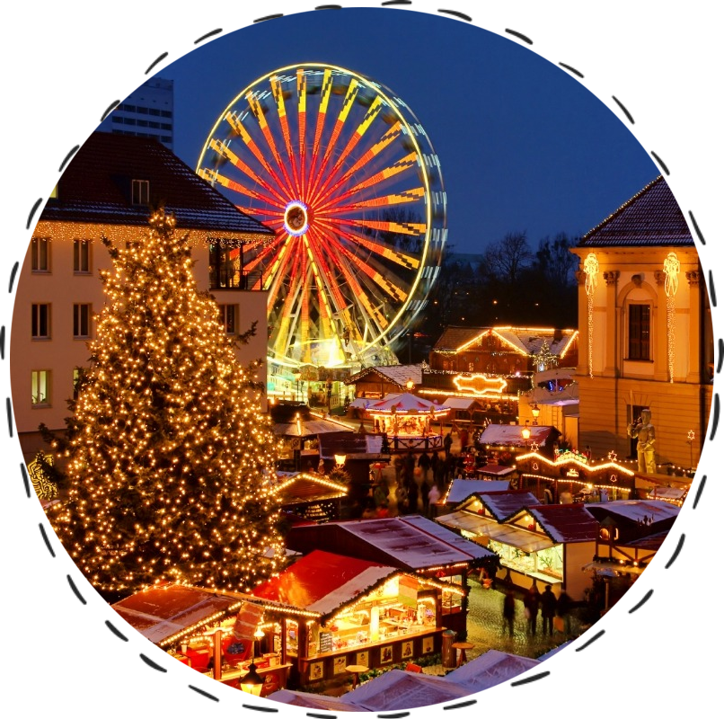
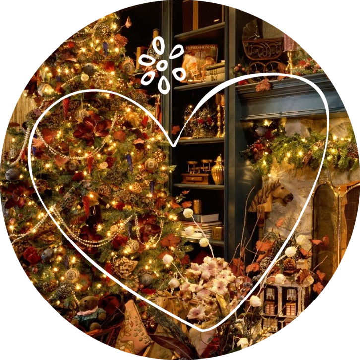
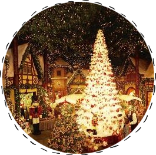
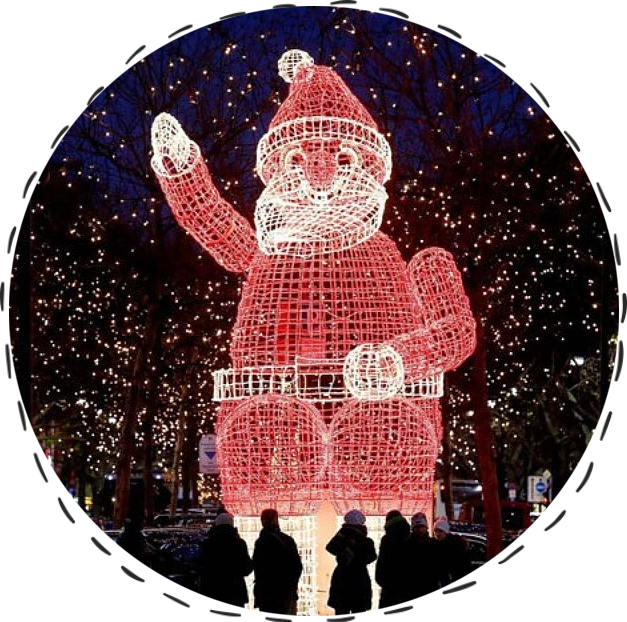
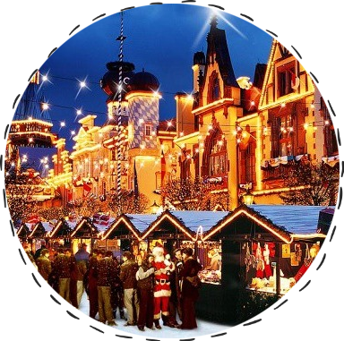

Не пропустите! Черная пятница!!!
Скидки до 70%!
15 декабря 2017 года
При заказе тура "Путешествие в рождество" Вы гарантированно получите скидку до 50%!!!


Для кого-то этот праздник связан с религиозными обрядами и ритуалами. Его встречают дома. Но для многих это просто большой душевный праздник, который хочется отмечать весело, радостно, даря и принимая подарки. Праздновать не обязательно дома. Почему бы не вырваться на Рождественские каникулы в другие страны?В Европе Рождество отмечается ярко, тепло и окутано волшебством сказки. Этот праздник более любимый, чем привычный для нас Новый год. Готовятся к нему европейцы заранее. Всюду начинают работать рождественские ярмарки, в магазинах устанавливают большие праздничные скидки, а города и прочие поселения наряжаются в яркие украшения.
Почувствуйте, что такое настоящий праздник Рождества, отправившись в европейские туры от нашей компании.
Рождественские и новогодние праздники каждый в душе ожидает с благоговейным трепетом, с надеждами, в приподнятом настроении и с ощущением, что вот-вот произойдет чудо. Это чудо вы можете сотворить для себя сами – бросьте все дела, скучные домашние посиделки и горы посуды после праздничных посиделок. Отправляйтесь в путешествие. Туры на Рождество 2018 – ваша «палочка-выручалочка», они вдохновят вас на подвиги и покажут, что мечты сбываются.
 Дух праздников чувствуется в европейских странах уже в декабре. Каждый город, каждый уголок прихорашивается, надевает яркие огни, чтобы подарить людям чудо. Рождественские туры из Минска – это не только возможность отпраздновать по-новому, но еще и увидеть уникальные места, побывать на рождественских ярмарках, проникнуться особым настроением.Компания «Респектор трэвел» приглашает вас отправиться в незабываемое путешествие по популярным направлениям.